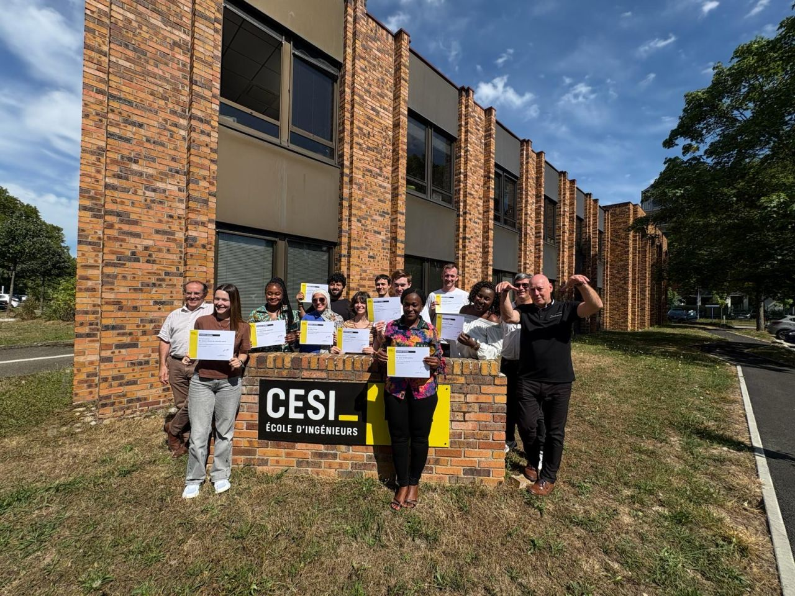
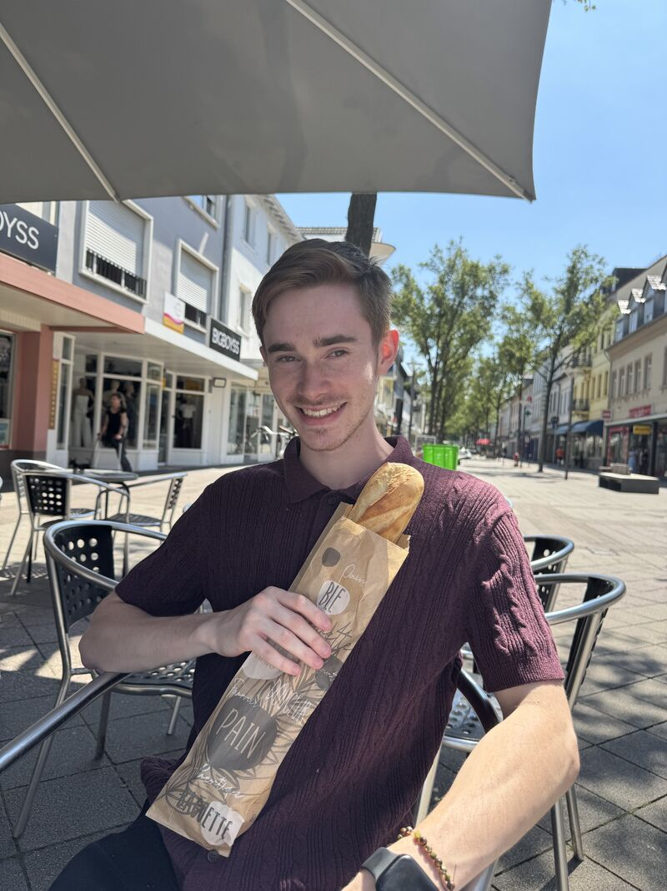
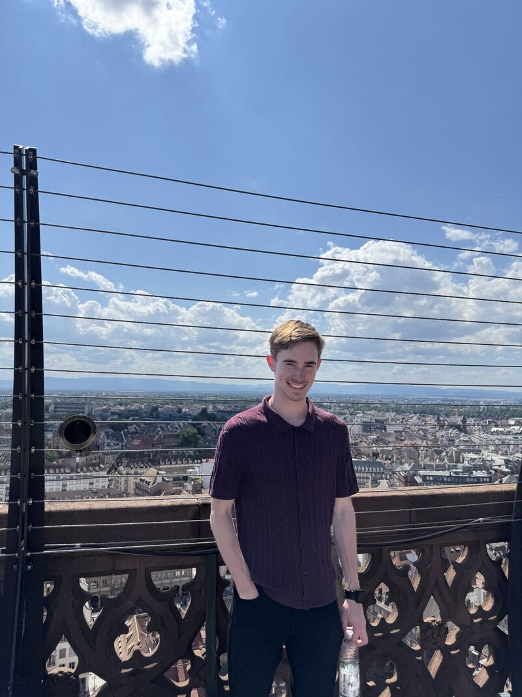
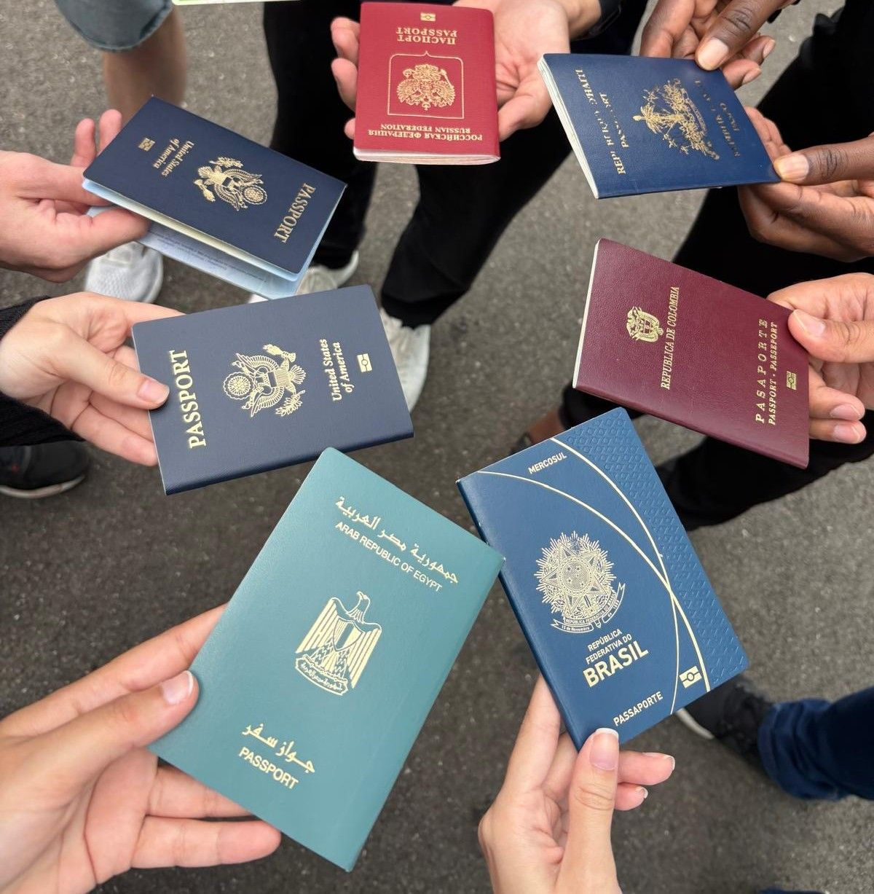

Global Studies
A comprehensive reflection of my academic experiences abroad.
Smart Innovation: Enhancing Ideas with AI (Strasbourg, France), CESI Engineering School
Jul. 2025
This two-week program in Strasbourg, France in partnership with CESI Engineering School explored the
applications of artificial intelligence in modern innovation, combining theoretical knowledge with hands-on experience.
I learned a lot about machine learning and AI fundamentals, but what stood out the most was the opportunity to collaborate with peers from all over the world.
Outside the classroom, experiencing life in Strasbourg reminded me how much growth happens when you step outside your usual environment.
Whether navigating unfamiliar streets or collaborating across language barriers, I found energy in the challenge and perspective in the unfamiliar.



